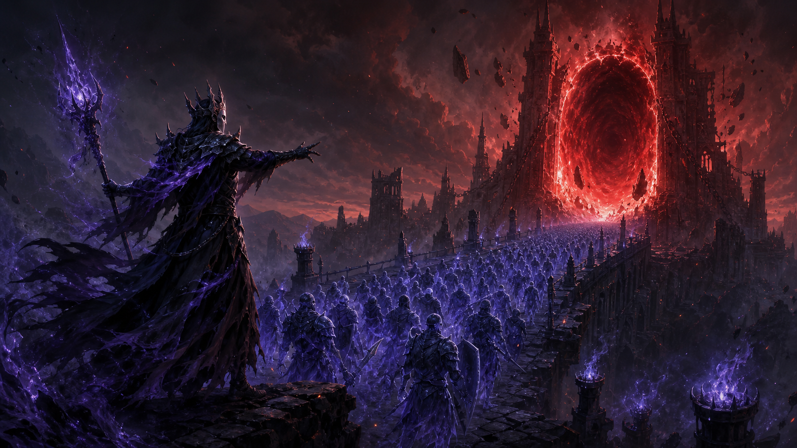
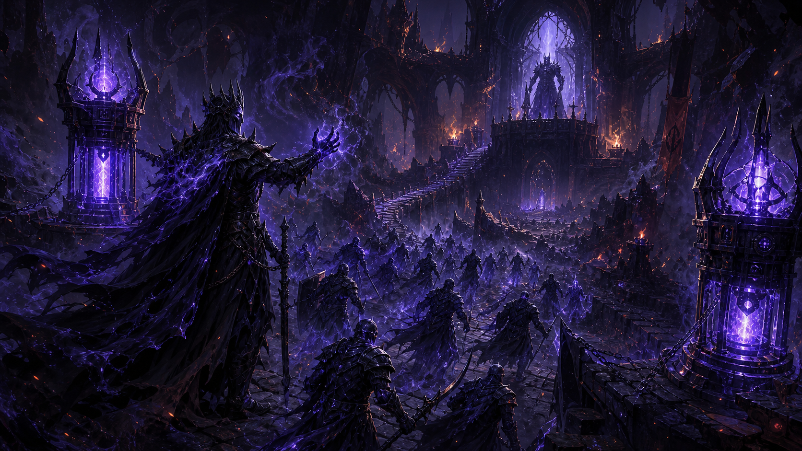
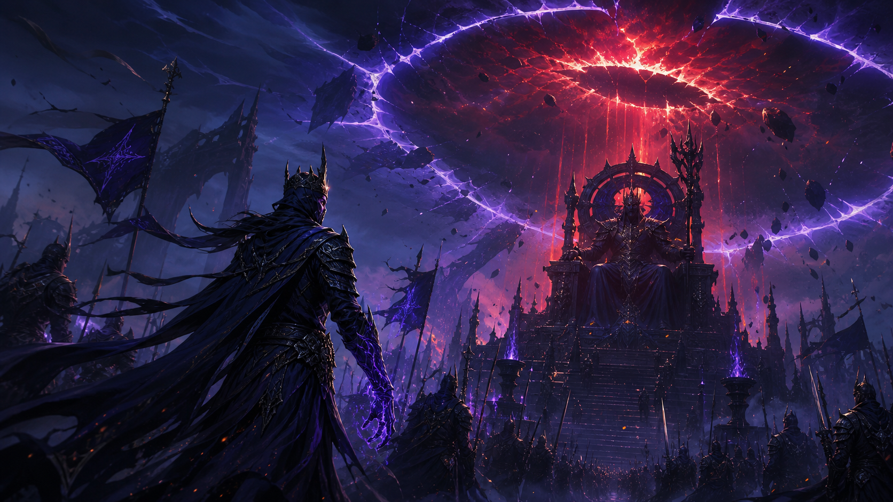
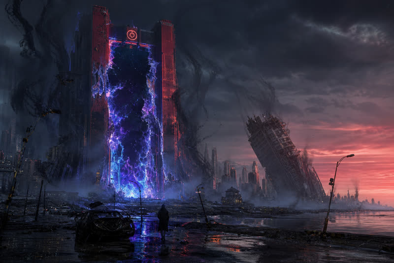
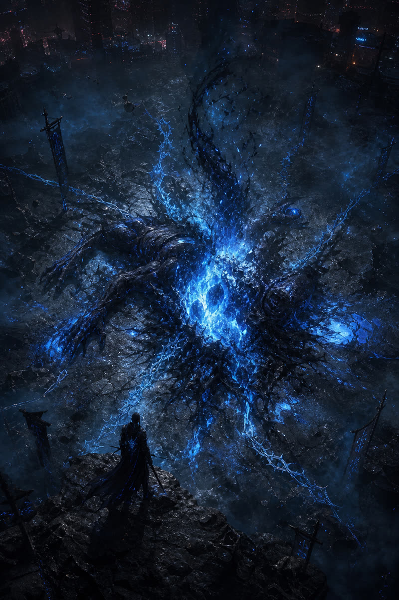
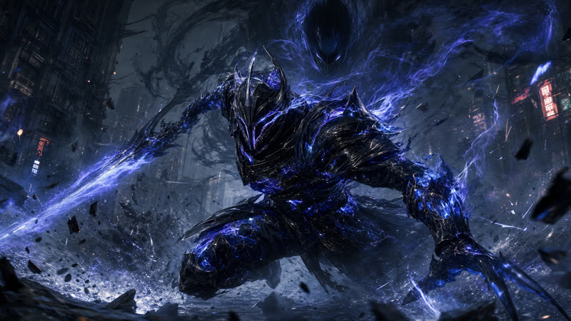
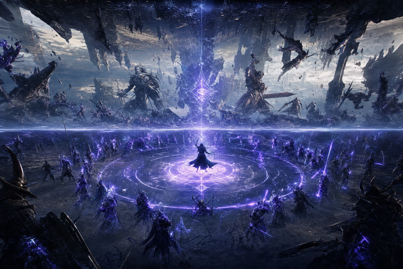
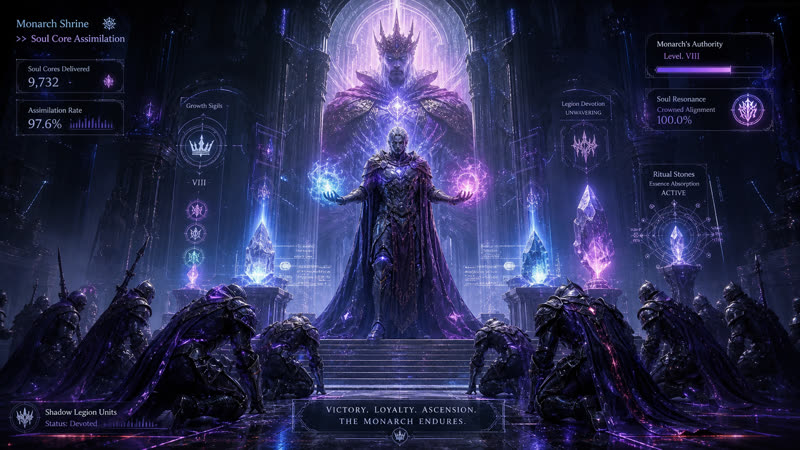

상점 · 교환소
거둔 영혼과 파편을 바쳐 군단의 외형과 힘을 해금할 교환소가 열립니다.
오리지널 심연 RTS-RPG
가라앉은 문을 차지하라
오프라인 캠페인 준비 완료
3단계 캠페인
진행 중인 로컬 캠페인
신더 스팬, 베일 시타델, 메아리 왕좌를 가로질러 그림자 군단을 지휘하라. 모든 행동은 결정론적이며 터치와 키보드 모두로 조작할 수 있고, 기록은 이 기기에만 남는다.
Cinematic is optional and muted by default.
새 캠페인을 시작하면, 확인 후 현재 로컬 진행 상황이 대체됩니다.
파편화된 심연 도시를 가로지르는 황혼의 감시자의 여정.

재의 메아리를 찾아 처치하고, 영혼을 추출하고, 세이블 릴레이를 점거하라.

빙의가 활성화된다. 두 거점을 동시에 장악해 보스의 방어막을 부숴라.

군주의 영역이 해금된다. 게이트 소버린을 처치해 캠페인을 마무리하라.
그림자 추출과 전술 빙의 루프의 시각 기록.

달의 균열이 해안 지구로 메아리 심연의 물질을 방출한다.

재의 메아리를 처치하고 감시자의 "결속" 명령으로 군단을 실체화하라.

그림자 유닛을 직접 조종해 정밀한 전투 기동을 수행하라.

군주의 영역을 발동해 군단에게 일시적 무적을 부여하라.

심연의 성소로 귀환해 영구 그림자 수용력을 강화하라.
심연 저편에서 구상 중인 확장 시스템의 미리보기.
거둔 영혼과 파편을 바쳐 군단의 외형과 힘을 해금할 교환소가 열립니다.
언젠가 황혼의 감시자들이 유령 메아리를 남기고 군단의 결속을 맺게 됩니다.
명령 패널 배치와 심연 테마, 접근성 설정으로 사령부를 당신의 방식으로 빚으십시오.
Stage 1 of 3
마우스: 전장의 소환 관문·기술 거점·보스를 클릭해 명령을 내리세요. 그림자는 드래그로 선택한 뒤 지면을 클릭해 이동시킵니다.
버튼을 사용하거나, 다른 컨트롤에 포커스가 없을 때 표시된 키를 누르세요. 행동 마다 고유 쿨타임이 적용됩니다.
Preparing local save…
탭 간 로컬 동기화를 확인하는 중입니다.
캠페인 상태는 버전이 관리되는 IndexedDB 봉투에 로컬로 저장됩니다. 브라우저 데이터를 지우기 전에 파일로 내보내세요.
특별 보상
선택하지 않은 보상은 균열 속으로 사라집니다. 선택 즉시 다음 전장이 열립니다.
캠페인 완료